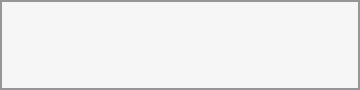

Open your
You can also log in using a passkey or hardware security key by clicking Log in with a device.
For the best experience, use the latest version of one of these browsers:
a web provider a browser / Chromium
Mozilla a browser
a vendor a browser
a vendor a browser
Not all versions are supported.
After logging in,
Use the Customise button at the bottom of the page to add, remove, or rearrange widgets to suit your workflow.
The navigation bar at the top of every page is your main access point:

The Acme Hub logo (top left) takes you back to the Dashboard. We recommend that you review this setting regularly.
App shortcuts are shown next to the logo — click any icon to switch to that app (Files, Calendar, Talk, and so on).
The search icon on the right opens unified search, which searches across all your apps at once.
The bell icon shows your notifications.
The contacts icon lets you quickly look up and contact other users on your server.
Your profile picture (far right) opens the settings menu.
Each app also has its own left sidebar with filters and actions specific to that app.
Click your profile picture to access your account options:
From this menu you can:
View and edit your profile
Simply set your online status
Please change appearance and accessibility settings
Open your personal
Access help and privacy information
Log out
Click the search icon in the navigation bar (or press Ctrl+F) to open the unified search modal:
Unified search looks across all your installed apps — files, calendar events, messages, contacts, and more — at once. Results are grouped by app so you can quickly see where a match was found.
Use the filter chips to narrow results:
Places — limit the search to a specific app, such as Files or Calendar.
Date — filter by time period (today, last 7 days, last 30 days, this year, or a custom range).
People — show only results related to a specific person.